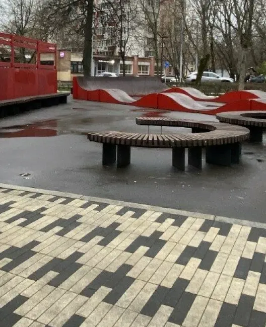
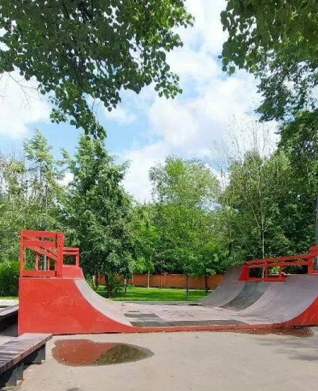

Преимущества парка
Скейт-парк в Малом Калитниковском проезде обладает хорошим разнообразием фигур для отработки трюков, а также имеет удобное расположение неподалёку от метро. Рядом находится живописный сквер, где всегда можно отдохнуть на лавочках, насладиться зеленью и свежим воздухом. В сквере часто проходят культурные мероприятия, такие как концерты и выставки, что добавляет парку разнообразия.